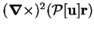

Next: About this document ...
Up: Vector Fields in a
Previous: The Stokes problem in
Contents
Axisymmetric poloidal fields
If a poloidal field,
;
or, equivalently, its defining scalar,
![$\mbox{$\mathcal P$}[\mathbf{u}]$](img1313.png) ;
is independent of the azimuth,
;
is independent of the azimuth,  , the field-lines are confined to planes
passing through the line
, the field-lines are confined to planes
passing through the line  (the
(the  -axis) and are identical in
each such plane. Then,
-axis) and are identical in
each such plane. Then,
where
is Stokes's stream-function
which is constant along the field-lines
(Lamb 1932, pp. 125-6).
This connection between
axisymmetric poloidal fields and Stokes's stream-function was pointed out
by Moffatt (1978, p. 21), though he misprinted the relation.
Geordie McBain
2001-01-27